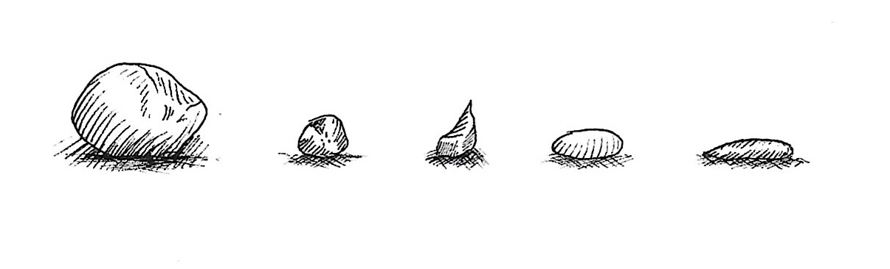

I still think of stones I skipped last Summer.
I scour the beach, picking up the flattest and most circular rocks I can find. After 20 minutes or so of searching I find at least 5–6 good skippers and a handful of rocks that I know won’t skip far, but may be good to practice my swing with.
These rocks have taken hundreds of years to form, maybe thousands when it comes to the rounder and flatter few. They are older than anyone I know. They have endured this Earth far longer than I ever will.
And now I will throw them as hard as I can, with a rotational force generated by a hooked finger, at an angle of approximately 20 degrees relative to the surface of the river from whence they came.
In the brief time between finding them, picking them, tossing them and watching them dance over the horizon leaving countless concentric circles between shorter and shorter intervals before irrevocably dipping below the surface, these rocks exist as skipping stones.
For a few minutes, their newfound purpose brings me a satisfaction granted only by listening to the sounds of that hard flat exterior smack against a tide which attempts to test my footing.
And then they sink.
They now lie, once again among their own. Perhaps to be washed up again in a different time, where they will serve a different purpose.
I will not see them again.
And they will not feel the warmth of my hands, fingers or the concentrated gaze of my eyes as I determine the optimum throwing grip.
Do they think of me as they rest unseen on the riverbed? Will they remember my touch? Will they remember how, for a short period of time, they flew.
